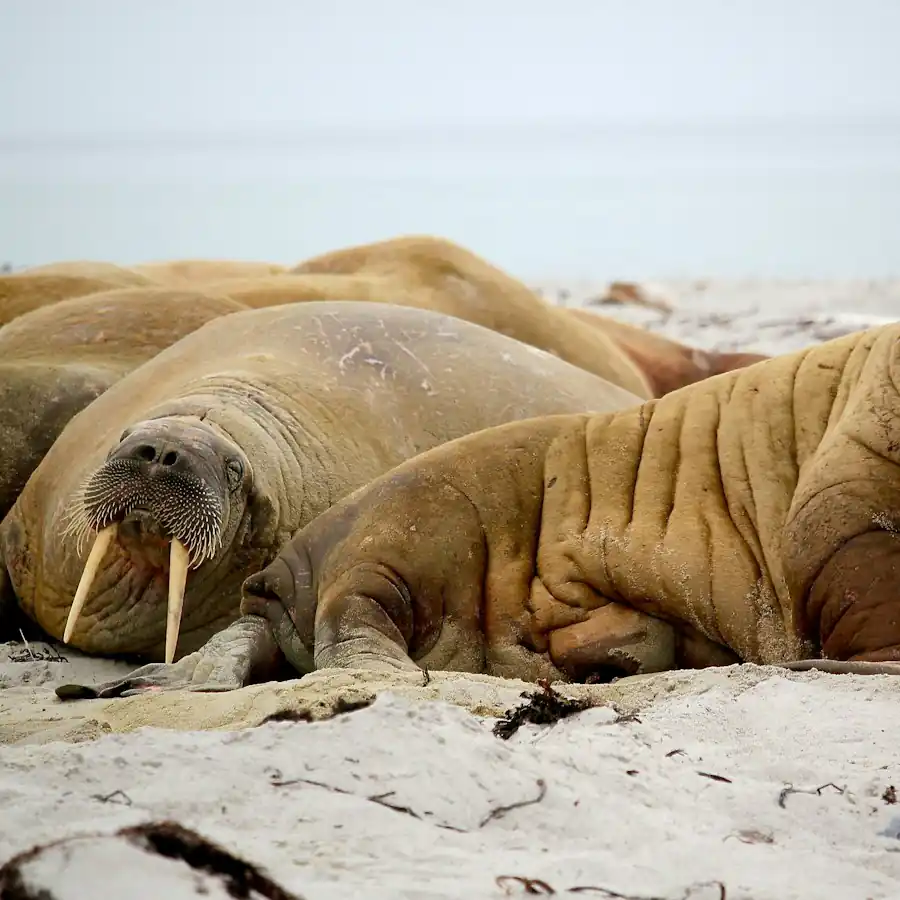

Mascot
Walrus Wally
A grumpy, kind walrus who explains the tanks to children - twelve poses and a costume.

-
The brief
The aquarium's signs were written for adults. They wanted someone small visitors would follow from tank to tank - and who would not be cute about the plastic in the sea.
-
What I drew
A walrus with a moustache and opinions: a turnaround sheet, twelve poses, a speech bubble style for the signs and the pattern for a costume the staff wear on Sundays.
-
How it went
Wally is on forty signs, the tickets and a plush toy that sold out twice. Children now ask the staff where he sleeps.
"Children queue to take a photo with Wally. Nobody queues for our old logo."
Want one like this?